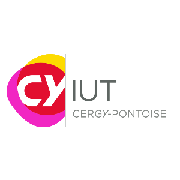
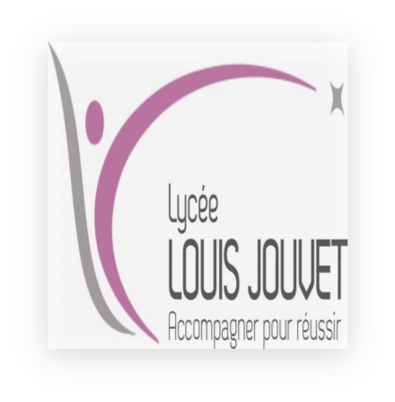

Qui suis-je ?
Je m'appelle Makni Amir, j'ai 21 ans et je suis étudiant en première année de BUT Informatique à l'IUT d'Orsay. Passionné par l'informatique, je suis constamment à la recherche de nouveaux défis pour développer mes compétences.
Mon Parcours académique 📚

Université Paris-Saclay - IUT d'Orsay
2022 - 2026
BUT Informatique - Réalisation d'applications

CY Cergy Paris Université - Site de Neuville
2021 - 2022
BUT Génie Électronique et Informatique Industrielle

Lycée Polyvalent Louis - Taverny
2020 - 2021
Baccalauréat STI2D Spécialité SIN
Mes Objectifs 🎯
Mon objectif est de devenir un développeur full stack performant et polyvalent. Je souhaite acquérir des compétences solides en développement web, en programmation et en administration de bases de données. Je suis également intéressé par l'intelligence artificielle et l'Internet des objets.